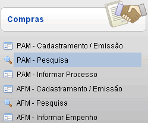
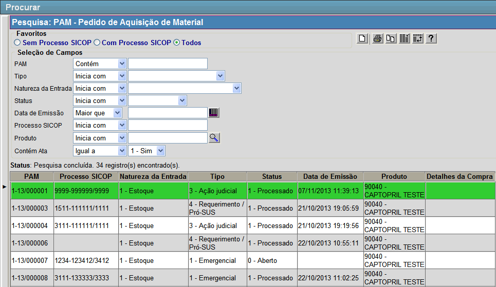

PAM - Pesquisa [ Voltar
]
Esta tela permite o usuário localizar Pedidos de Aquisição de Material.
O formulário "PAM - Pesquisa" encontra-se dentro do
menu "Compras - Compras".
Após clicar no formulário, o sistema
abrirá a seguinte tela:
Siga os passos abaixo para localizar um PAM.
1º Passo: configure os filtros de acordo com suas necessidades. Utilize os filtros da pesquisa para localizar o PAM desejado. No favorito "Todos", são eles:
- PAM (Contém). Entre aqui com o código ou parte do código do PAM.
- Tipo (Inicia com). Selecione aqui entre as opções: "1 - Emergencial", "2 - Abastecimento Regular", "3 - Ação Judicial" e "4 - Requerimento / Pró-SUS".
- Natureza da Entrada (Inicia com). Selecione aqui entre as opções: "1
- Estoque", "2 - Estoque - Doação", "3 - Estoque - Ministério da
Saúde", "4 - Estoque - Produção", "5 - Patrimônio", "6 - Uso
específico" e "7 - Recebimento Regional".
- Status (Inicia com). Selecione aqui entre as opções: "0 - Aberto", "1 - Processado", "2 - Rejeitado" e "3 - Cancelado".
- Data de Emissão (Maior que). Entre aqui com uma data de referência para que sejam retornados todos os valores acima dela. Clique no botão
 [Data] para selecioná-la por meio de um calendário. [Data] para selecioná-la por meio de um calendário. - Processo SICOP (Inicia com). Entre aqui com o número do processo associado ao PAM.
- Produto (Inicia com). Insira aqui o código do produto para o qual foi criado um PAM. Clique no botão
 [Pesquisar] para selecioná-lo por meio de uma listagem contendo todos os produtos cadastrados. [Pesquisar] para selecioná-lo por meio de uma listagem contendo todos os produtos cadastrados. - Contém Ata. Selecione aqui entre "0 - Não" ou "1 - Sim".
|
Campos de data possuem alguns
atalhos importantes, são eles:
Data
atual: digite o sinal . (ponto) e
pressione a tecla "Enter" para que o sistema retorne a data atual;
Data
do mês corrente: digite o dia do mês e
pressione a tecla "Enter" para que o sistema retorne o mês e ano
correntes;
Dias
a contar da data atual: digite o sinal + (mais) ou - (menos)
antes do número de dias em referência à data atual e pressione
a
tecla "Enter" para a data anterior ou posterior à data atual. |
2º Passo: selecione com um clique o PAM
desejado. O usuário será direcionado à tela
"PAM - Pedido de Aquisição de Material", onde poderá visualizar todos os detalhes do pedido.
Se desejar, na tela "PAM - Pedido de Aquisição de Material", clique no botão  [Relatório] para gerar o relatório "Pedido de Aquisição de Material (PAM)". [Relatório] para gerar o relatório "Pedido de Aquisição de Material (PAM)".
Ir
para o topo da página |